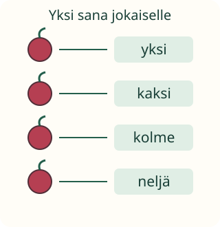

Jokaiselle oma laskusana

Aava laskee marjat eväsrasiaan. Miten jokainen pääsee mukaan laskuun?
Tavoite: annan jokaiselle esineelle yhden laskusanan.
Kosketus ja sana yhdessä
Ota muutama palikka. Kosketa yhtä ja sano yksi. Siirry toiseen ja sano kaksi. Jatka: yksi kosketus, yksi sana.
